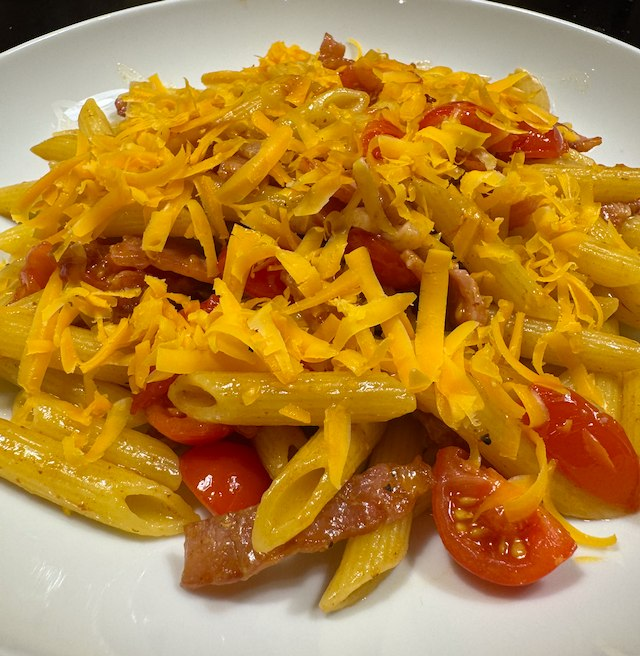

Serves: 2
Cook Time: 15 min
Bacon and Orange Cheese Pasta

This recipe is quick to make. A box of tomatoes weighs 250g, so in this recipe you want to use ⅔-¾ of a box.
Ingredients
- 250g short pasta
- 220g pack bacon, cut into pieces
- 150g cherry tomatoes, quartered, lightly salted and peppered
- olive oil
- balsamic vinegar
- orange cheese (red leicester etc.), grated
Method
Cook the bacon on a medium heat. The fat should render and brown a bit.
Cook the pasta following the packet timings. I use 1 tbsp salt with 1.5 litre of water.
Assemble. When the pasta is ready, drain and return to the pan. Add the tomatoes to the bacon and warm for 30 seconds, then mix with the pasta. Deglaze the bacon pan with water and add to the pasta. Drizzle with olive oil, balsamic vinegar and mix.
Serve on plates, with the cheese on top.